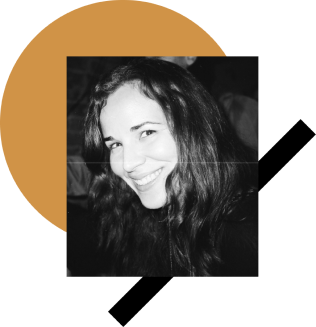

I'm Julianna, a UX Designer committed to creating products that will help underrepresented communities thrive.
My design career is rooted in curiosity. As a child, I was always interested in the why of things and solving problems so when we got our first computer at home, I immersed myself in learning it's functionality to the point that I was the go-to for my parents and family when it came to setting up and using computers. Back in 9th grade (the early 2000s), I had to create a flyer for a fake play, I had no idea what photoshop was at this point, so I played around with Microsoft Word and created a flyer that did the job. My teacher was impressed, and the work was presented at a college conference, she suggested I pursued a career in graphic design or advertising.
In college, I pursued a degree in Advertising, where I took some design classes, but I still felt out of place, and my work was not pixel perfect. After graduating, I took a job at an apparel company where I learned the in's and out's of developing a product. A few years later, and started working at a start-up involved in digital media as a social media manager. Even though my role didn't include creating actual designs myself, I was involved in the design process, and I felt like I was getting closer to where I wanted to be in my career.
A year later, I moved to New York and continued to work in digital marketing at a shopping app where I had my first interaction with UX design. This is where I had my "AHA!" moment and realized that it was possible to create digital solutions that were not only appealing but that actually met user's needs. This sparked my curiosity as far as what I needed to do to get there and if it would be possible for me to start a career in UX.
Simultaneously, I was taking on freelance projects related to social media, where I also took on the role of web designer at times so I could execute campaigns without depending on a web designer. I realized in the process that web design was not going in-depth when it came to empathize with the users and the process couldn't come down to using a template or a framework to present a product, there had to be more there. So the quest for a UX design program began.
WHY UX?
UX design is the perfect combination of my passion for solving problems and my ability to empathize with people. I was 100% committed to making this transition, and I enrolled in Bloc.io's UX Design Apprenticeship, where I was mentored by Becky Olsen. Through the program and Becky's guidance, learned the importance of solving problems based on user's needs and use the skills I had gained from digital marketing to create user-centered products. Being in New York helped me understand the lack of representation in tech for women and the Latin community, and one of my biggest passions is creating the tools and resources that can help these communities thrive in this space.